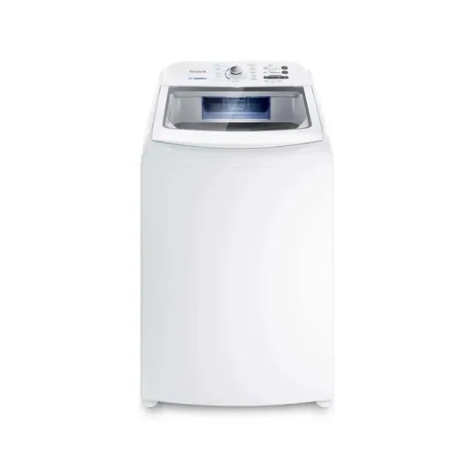
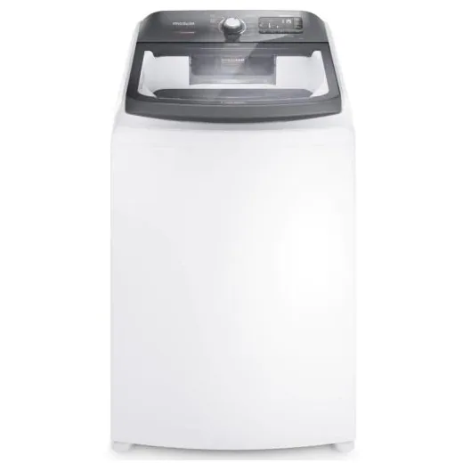
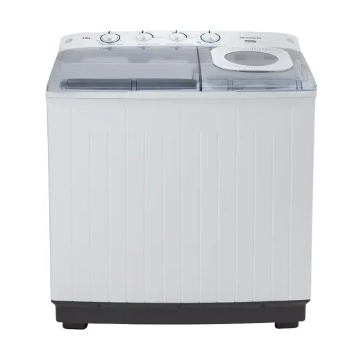
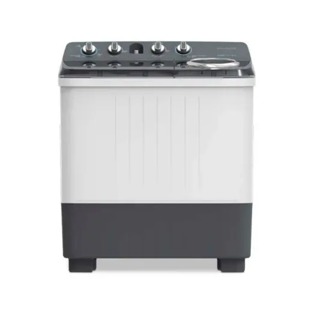

Inicio › Lavadoras y secadoras

Frigidaire · Modelo FWAB17J4EBGUW
Lavadora Frigidaire · 17 kg · FWAB17J4EBGUW
L 9,995
Más barato en Gallo más Gallo · ahorras hasta L 1,004 frente a la tienda más cara
Precio en cada tienda
| Tienda | Precio | Antes | Disponibilidad | |
|---|---|---|---|---|
| Gallo más Gallo | L 9,995 | — | Disponible | Ver en tienda › |
| Diunsa | L 10,490 | Disponible | Ver en tienda › | |
| Lady Lee | L 10,499.01 | Disponible | Ver en tienda › | |
| La Curacao | L 10,597 | Disponible | Ver en tienda › | |
| Elektra | L 10,999 | Disponible | Ver en tienda › |
Precios referenciales tomados de cada tienda el 21 de noviembre de 2026. El precio válido es el que muestra la tienda al comprar.
Historial de precio
Lo seguimos desde el 1 de noviembre. Precio más bajo registrado: L 9,995 en Gallo más Gallo (1 de noviembre), igual que hoy. Cambios de precio registrados: 4.
Características
| Bono | 1000 |
|---|---|
| width | 100%; |
| border-collapse | collapse; |
| margin | 20px 0; |
| font-family | Arial, sans-serif; |
| border | 1px solid #ddd; |
| padding | 8px; |
| text-align | left; |
| background-color | #f4f4f4; |
| font-weight | bold; |
Descripción
La lavadora Frigidaire FWAB17J4EBGUW de 17 kg ofrece un lavado potente, silencioso y eficiente. Equipada con tecnología Jet&Clean, diluye el 100% del detergente y suavizante para evitar manchas en la ropa, mientras mantiene el dispensador siempre limpio. Su cesta de acero inoxidable garantiza mayor durabilidad y cuidado con tus prendas.
Características destacadas
Tecnología Jet&Clean: limpia el dispensador automáticamente y asegura una mejor disolución del detergente.
Doble enjuague: elimina residuos de jabón para un lavado más profundo.
Filtro atrapa pelusa: retiene hasta 8 veces más que una lavadora convencional.
Sistema de ciclos rápidos: optimiza automáticamente el tiempo de lavado manteniendo el rendimiento.
Programa silencioso: reduce el nivel de ruido, ideal para usar en cualquier momento del día.
Cesta de acero inoxidable: resistente y moderna.
Otros lavadoras y secadoras Frigidaire

Lavadora Frigidaire · 20 kg · FWAB20J4EBGUWL 10,990En 5 tiendas · más barato en Diunsa Lavadora Frigidaire · 22 kg · FWIB22J4EBGUWL 11,490En 4 tiendas · más barato en Diunsa
Lavadora Frigidaire · 22 kg · FWIB22J4EBGUWL 11,490En 4 tiendas · más barato en Diunsa Lavadora Frigidaire · 18 kg · FWIB18T4EBPUGL 11,495En Gallo más Gallo
Lavadora Frigidaire · 18 kg · FWIB18T4EBPUGL 11,495En Gallo más Gallo
Lavadora Frigidaire · 18 kgL 11,999En Lady Lee Lavadora Frigidaire · 20 kg · FWID20E4MBSL 12,690En Diunsa
Lavadora Frigidaire · 20 kg · FWID20E4MBSL 12,690En Diunsa
Lavadora Frigidaire · 13 kgL 6,499En Lady Lee Secadora Frigidaire · 19 kg · FDE190MSSWL 13,990En Diunsa
Secadora Frigidaire · 19 kg · FDE190MSSWL 13,990En Diunsa
Lavadora Frigidaire · 12 kg · LFWTM12M3BUTWL 5,999En Elektra